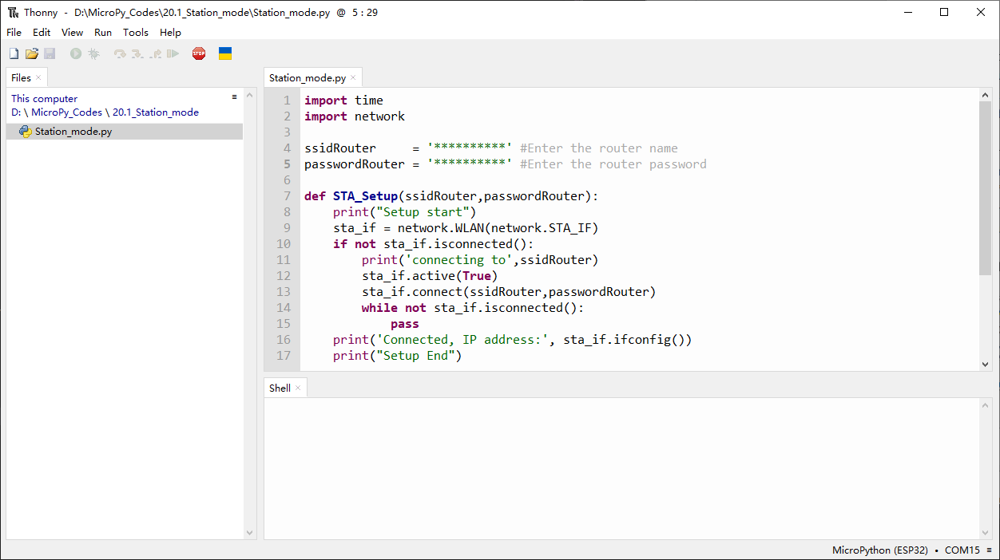
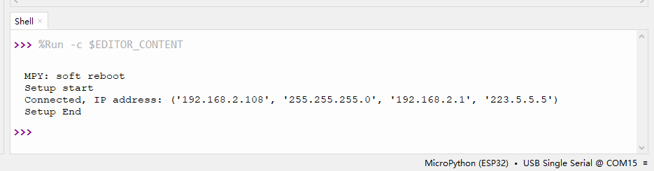
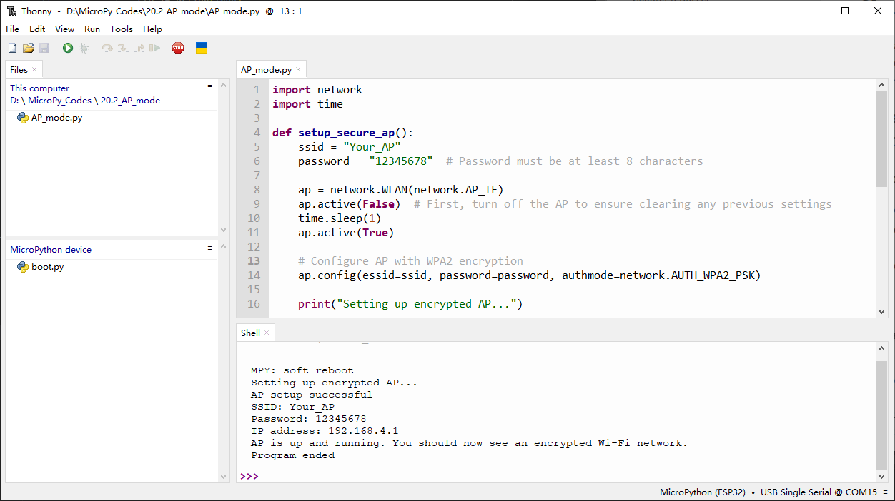
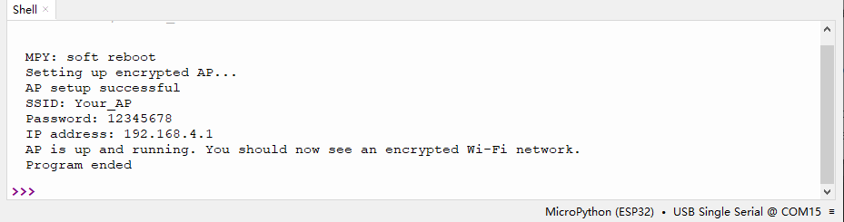
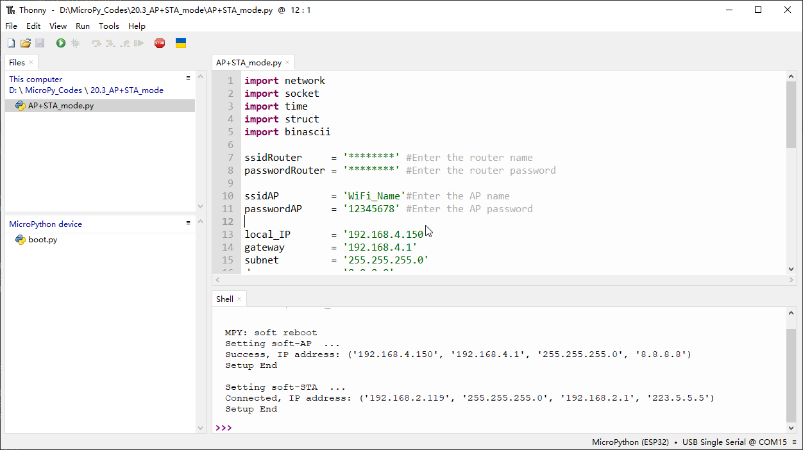
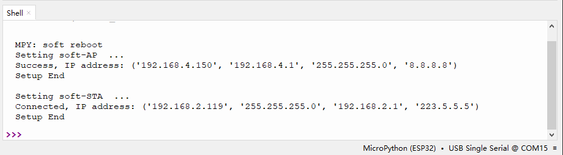
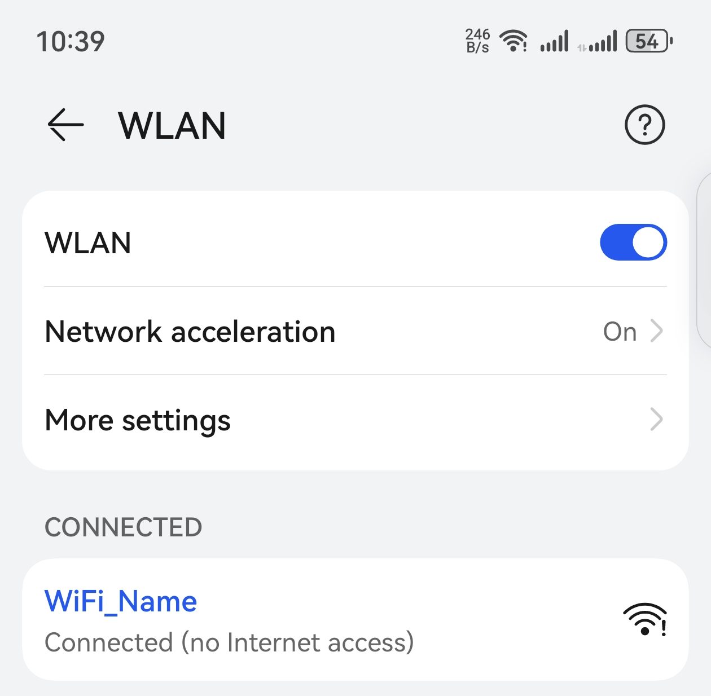

Chapter 20 WiFi Working Modes
In this chapter, we’ll focus on the WiFi infrastructure for ESP32-S3 WROOM. ESP32-S3 WROOM has 3 different WiFi operating modes: station mode, AP mode and AP+station mode. All WiFi programming projects must be configured with WiFi operating mode before using WiFi, otherwise WiFi cannot be used.
Project 20.1 Station mode
Component List
ESP32-S3-WROOM x1
Type C USB Cable x1
Connect
Connect ESP32-S3 to the computer using the USB cable.

Code
Move the program folder “Super_Starter_Kit_for_ESP32_S3/Python/Python_C odes” to disk(D) in advance with the path of “D:/Micropython_Codes”.
20.1_Station_mode
Because the names and passwords of routers in various places are different, before the Code runs, users need to enter the correct router’s name and password in the box as shown in the illustration above. After making sure the router name and password are entered correctly, compile and upload codes to ESP32S3, wait for ESP32-S3 to connect to your router and print the IP address assigned by the router to ESP32-S3 in “Shell”.
The following is the program code:
import time
import network
ssidRouter = 'xxxxxxxx' #Enter the router name
passwordRouter = 'xxxxxxxx' #Enter the router password
def STA_Setup(ssidRouter,passwordRouter):
print("Setup start")
sta_if = network.WLAN(network.STA_IF)
if not sta_if.isconnected():
print('connecting to',ssidRouter)
sta_if.active(True)
sta_if.connect(ssidRouter,passwordRouter)
while not sta_if.isconnected():
pass
print('Connected, IP address:', sta_if.ifconfig())
print("Setup End")
try:
STA_Setup(ssidRouter,passwordRouter)
except:
sta_if.disconnect()
Project 20.2 AP mode
Component List & Circuit are the same as in Project 20.1.
Circuit
Connect ESP32-S3 to the computer using the USB cable.
Code
Move the program folder “Super_Starter_Kit_for_ESP32_S3/Python/Python_C odes” to disk(D) in advance with the path of “D:/Micropython_Codes”.
Open “Thonny”, click “This computer” >> “D:” >> “Micropython_Codes” >> “20.2_AP_mod e”. and double click “AP_mode.py”. 20.2_AP_mode
Before the Code runs, you can make any changes to the AP name and password for ESP32-S3 in the box as shown in the illustration above. Of course, you can leave it alone by default. Click “Run current script”, open the AP function of ESP32-S3 and print the access point information.
Turn on the WiFi scanning function of your phone, and you can see the ssid_AP on ESP32S3, which is called “WiFi_Name” in this Code. You can enter the password “12345678” to connect it or change its AP name and password by modifying Code.

The following is the program code:
import network
import time
def setup_secure_ap():
ssid = "Your_AP"
password = "12345678" # Password must be at least 8 characters
ap = network.WLAN(network.AP_IF)
ap.active(False) # First, turn off the AP to ensure clearing any previous settings
time.sleep(1)
ap.active(True)
# Configure AP with WPA2 encryption
ap.config(essid=ssid, password=password, authmode=network.AUTH_WPA2_PSK)
print("Setting up encrypted AP...")
# Wait for AP activation
for _ in range(10): # Wait for up to 10 seconds
if ap.active():
print("AP setup successful")
print("SSID:", ssid)
print("Password:", password)
print("IP address:", ap.ifconfig()[0])
return True
time.sleep(1)
print("AP setup failed")
return False
try:
if setup_secure_ap():
print("AP is up and running. You should now see an encrypted Wi-Fi network.")
else:
print("Unable to set up AP. Please check your hardware and firmware.")
except Exception as e:
print("An error occurred:", str(e))
print("Program ended")
Project 20.3 AP+Station mode
Component List & Circuit
Component List & Circuit are the same as in Project 23.1.
Code
Move the program folder “Super_Starter_Kit_for_ESP32_S3/Python/Python_C odes” to disk(D) in advance with the path of “D:/Micropython_Codes”.
Open “Thonny”, click “This computer” >> “D:” >> “Micropython_Codes” >> “20.3_AP+ST A_mode”and double click “AP+STA_mode.py”. 20.3_AP+STA_mode
It is analogous to Project 20.1 and Project 20.2. Before running the Code, you need to modify ssidRouter, passwordRouter, ssidAP and passwordAP shown in the box of the illustration above.
After making sure that the code is modified correctly, click “Run current script” and the “Shell” will display as follows:
Turn on the WiFi scanning function of your phone, and you can see the ssidAP on ESP32-S3.
The following is the program code:
import network
import socket
import time
import struct
import binascii
ssidRouter = '********' #Enter the router name
passwordRouter = '********' #Enter the router password
ssidAP = 'WiFi_Name'#Enter the AP name
passwordAP = '12345678' #Enter the AP password
local_IP = '192.168.4.150'
gateway = '192.168.4.1'
subnet = '255.255.255.0'
dns = '8.8.8.8'
sta_if = network.WLAN(network.STA_IF)
ap_if = network.WLAN(network.AP_IF)
def STA_Setup(ssidRouter,passwordRouter):
print("Setting soft-STA ... ")
if not sta_if.isconnected():
print('connecting to',ssidRouter)
sta_if.active(True)
sta_if.connect(ssidRouter,passwordRouter)
while not sta_if.isconnected():
pass
print('Connected, IP address:', sta_if.ifconfig())
print("Setup End")
def AP_Setup(ssidAP,passwordAP):
ap_if.ifconfig([local_IP,gateway,subnet,dns])
print("Setting soft-AP ... ")
ap_if.config(essid=ssidAP,authmode=network.AUTH_WPA_WPA2_PSK, password=passwordAP)
ap_if.active(True)
print('Success, IP address:', ap_if.ifconfig())
print("Setup End\n")
try:
AP_Setup(ssidAP,passwordAP)
STA_Setup(ssidRouter,passwordRouter)
except:
sta_if.disconnect()
ap_if.disconnect()